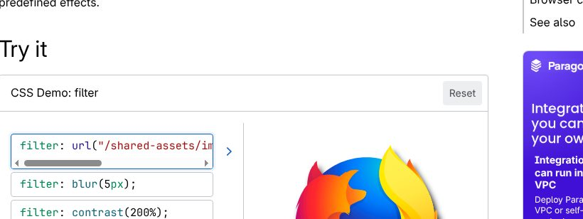
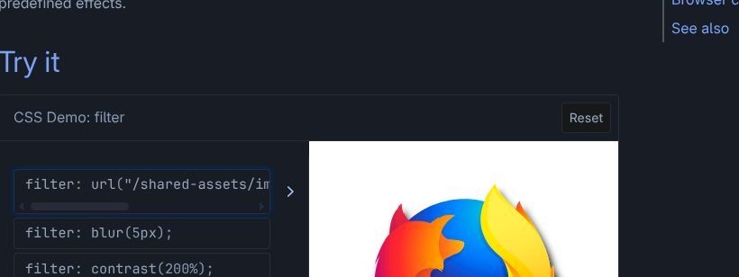

I build web services in Rust and apps in TypeScript and React. These three are my own work, public, and I use them every day. Each clip shows the thing itself working.
What I built and use every day
The Android app
TypeScript · React · Capacitor · Rust → WebAssembly
Study sessions, Rust practice rounds, a job search desk and a video studio, in one app.
file_host: the server behind them
Rust · Axum · Tokio · SQLite · Redis · NATS · Grafana
It runs at home, under its own dashboards: what is up, what failed, which stage of each job is stuck.
Gaps I'm working through


Without Page FilterWith itPage Filter misses parts of a page
Pages draw some parts inside their own components and keep changing after they load, so the filter can't be sure it has darkened everything.
busywaiting for a coredashed: 4 cores
Mock-up of home's Grafana panel
Home has four CPU cores
When work slows down, I'm measuring whether it's my code or the machine.
Experience
Software engineer, independent
2024 to nowThe projects above, with CI that runs only what a change touches and a contract check that fails a server pull request which would break the app.
Inventory Specialist, WIS
2024 to now · Sacramento, CACycle counts and data entry at 99.9%+ accuracy, reconciled against system records daily.
Data Administrator, CABA Design
2020 to 2023 · Rancho Cordova, CA- Tableau dashboards on PostgreSQL for daily operations.
- Executive reporting automated through the Google Workspace API, saving 10+ hours a week.
- Python scripts against Odoo's XML-RPC API to create records and fix data.
Clinical Data Operator, Natera
2019 to 2020 · San Carlos, CAHIPAA-compliant sample accessioning at 99.99% accuracy, 30+ kits an hour.
Skills
Rust, TypeScript, React, Node.js, SQL, Python, Axum, Tokio, Redis, NATS, Docker, GitHub Actions, Grafana, Prometheus, Vitest, Playwright
Education
B.S. Mechanical Engineering, UC Merced, 2015